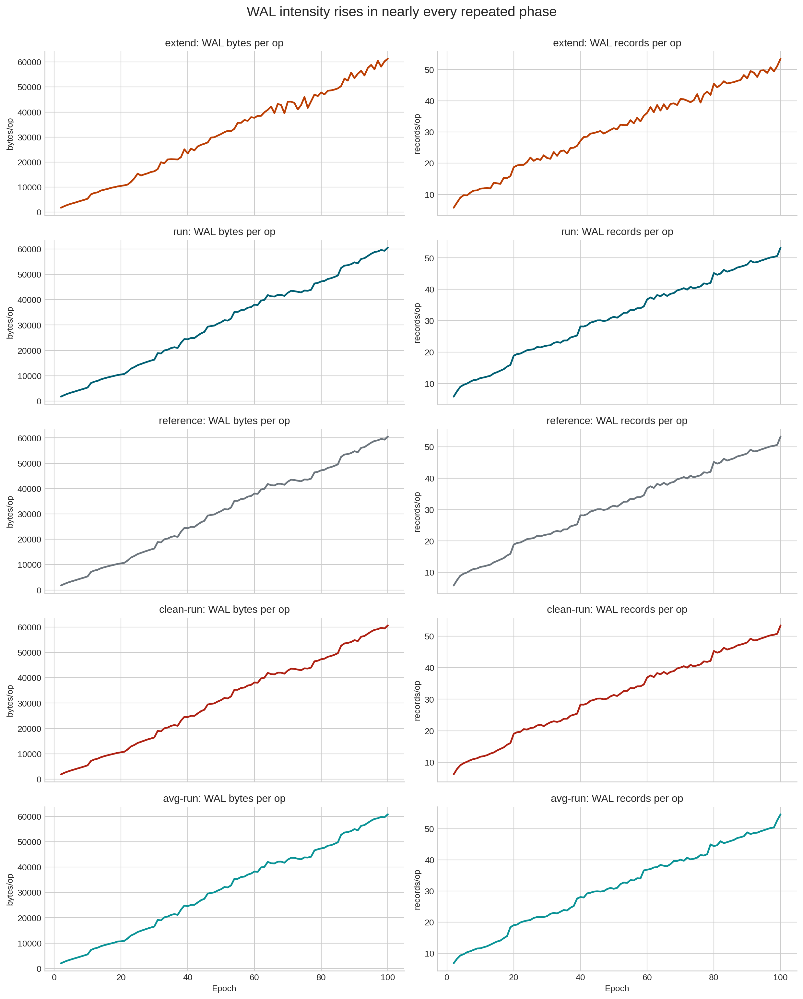
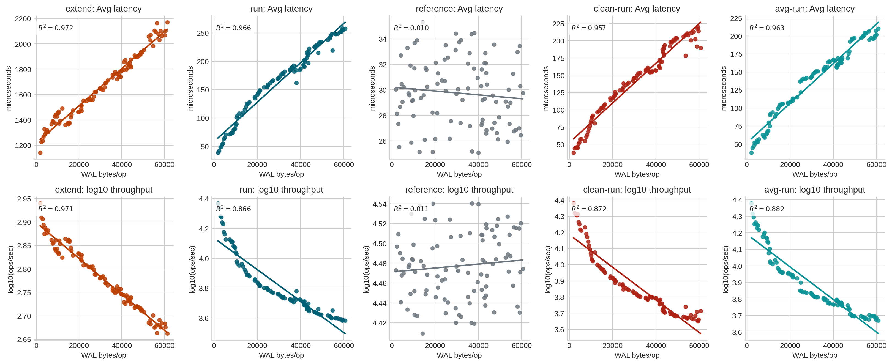

| dataset | rows | epochs | phases_analyzed | wal_metrics | |
|---|---|---|---|---|---|
| 0 | postgresql_run1_uniform_heavy_vacuum.csv | 501 | 101 | extend, run, reference, clean-run, avg-run | wal_bytes_per_op, wal_records_per_op, wal_fpi_... |
WAL Effects On Latency And Throughput: postgresql_run1_uniform_heavy_vacuum.csv
1 Overview
This report focuses specifically on the write-ahead log (WAL) metrics in postgresql_run1_uniform_heavy_vacuum.csv and how they relate to:
Throughput(ops/sec)AverageLatency(us)95thPercentileLatency(us)99thPercentileLatency(us)
The dataset is split into the repeated benchmark phases:
extendrunreferenceclean-runavg-run
Because PostgreSQL WAL counters are cumulative, the report emphasizes per-epoch deltas normalized by Operations:
wal_bytes_per_opwal_records_per_opwal_fpi_per_opwal_buffers_full_per_op
2 Load And Prepare The Data
3 Cross-Phase WAL Summary
| Operation | Throughput change % | Avg latency change % | WAL bytes/op start | WAL bytes/op end | WAL records/op start | WAL records/op end | WAL FPI/op start | WAL FPI/op end | WAL buffers-full/op start | WAL buffers-full/op end | |
|---|---|---|---|---|---|---|---|---|---|---|---|
| Phase | |||||||||||
| extend | EXTEND | -46.3 | +86.5 | 1,761.30 | 61,304.83 | 5.733 | 53.457 | 0.074 | 6.979 | 0.02102 | 1.10027 |
| run | READ | -85.5 | +650.8 | 1,767.76 | 60,536.89 | 5.824 | 53.272 | 0.074 | 6.560 | 0.02102 | 1.10027 |
| reference | READ | +14.8 | -14.7 | 1,767.76 | 60,536.89 | 5.824 | 53.272 | 0.074 | 6.560 | 0.02102 | 1.10027 |
| clean-run | READ | -79.3 | +420.4 | 1,893.56 | 60,642.34 | 6.192 | 53.374 | 0.074 | 6.560 | 0.03775 | 1.08781 |
| avg-run | READ | -81.7 | +493.3 | 2,042.46 | 60,817.68 | 6.821 | 54.645 | 0.074 | 6.560 | 0.03775 | 1.08781 |
- Across the degrading phases,
wal_bytes_per_oprises from roughly 1.8-2.0k to about 60k bytes per operation. wal_records_per_op,wal_fpi_per_op, andwal_buffers_full_per_opalso rise sharply over time.referenceis the important counterexample: it sees nearly the same WAL-per-op growth asrun, but its throughput and latency remain stable or slightly improve.
4 WAL Intensity Over Time

The key nuance is that the WAL curves are not unique to the degrading phases. reference also accumulates more WAL work per operation, which means WAL growth alone is not sufficient to explain slowdown.
5 WAL Bytes Per Operation Vs Performance

This is the core picture:
extend,run,clean-run, andavg-runall show strong long-run relationships between WAL intensity and worse performance.referencedoes not. ItsR^2stays near zero for WAL-vs-performance fits, despite similar WAL growth.
6 Quartile View: More WAL, Worse Performance?
| wal_bucket | epoch_min | epoch_max | wal_bytes_per_op | throughput | avg_latency | Phase | |
|---|---|---|---|---|---|---|---|
| 0 | (1761.303, 15245.566] | 2 | 27 | 7,997.80 | 735.17 | 1,358.81 | extend |
| 1 | (15245.566, 31939.506] | 25 | 51 | 23,465.17 | 650.04 | 1,536.37 | extend |
| 2 | (31939.506, 44238.207] | 52 | 76 | 39,206.90 | 559.16 | 1,783.15 | extend |
| 3 | (44238.207, 61304.831] | 75 | 100 | 52,803.17 | 498.39 | 2,004.03 | extend |
| 4 | (1767.755, 14871.571] | 2 | 26 | 8,011.18 | 13,301.44 | 78.39 | run |
| 5 | (14871.571, 31749.018] | 27 | 52 | 23,502.43 | 6,464.75 | 152.74 | run |
| 6 | (31749.018, 43562.204] | 51 | 76 | 39,373.47 | 5,095.01 | 193.26 | run |
| 7 | (43562.204, 60536.886] | 75 | 100 | 52,723.68 | 4,130.14 | 238.88 | run |
| 8 | (1767.755, 14871.721] | 2 | 26 | 8,011.18 | 29,962.55 | 29.90 | reference |
| 9 | (14871.721, 31749.018] | 27 | 52 | 23,502.43 | 29,741.92 | 30.12 | reference |
| 10 | (31749.018, 43562.204] | 51 | 76 | 39,373.47 | 29,726.06 | 30.19 | reference |
| 11 | (43562.204, 60536.886] | 75 | 100 | 52,723.68 | 30,952.79 | 28.77 | reference |
| 12 | (1893.555, 14977.185] | 2 | 26 | 8,121.41 | 14,706.85 | 69.93 | clean-run |
| 13 | (14977.185, 31855.422] | 27 | 52 | 23,608.93 | 7,662.51 | 128.46 | clean-run |
| 14 | (31855.422, 43669.857] | 51 | 76 | 39,480.68 | 5,942.78 | 165.25 | clean-run |
| 15 | (43669.857, 60642.34] | 75 | 100 | 52,830.13 | 4,861.09 | 202.34 | clean-run |
| 16 | (2042.46, 15087.119] | 2 | 26 | 8,233.02 | 14,786.45 | 68.40 | avg-run |
| 17 | (15087.119, 31983.33] | 27 | 52 | 23,714.52 | 7,866.18 | 125.61 | avg-run |
| 18 | (31983.33, 43788.698] | 51 | 76 | 39,586.49 | 6,082.06 | 160.78 | avg-run |
| 19 | (43788.698, 60817.684] | 75 | 100 | 52,942.36 | 5,066.90 | 194.21 | avg-run |
The quartile view sharpens the contrast:
- In
run,clean-run,avg-run, andextend, higherwal_bytes_per_opbuckets line up with lower throughput and higher latency. - In
reference, the same upward movement inwal_bytes_per_opdoes not produce the same performance decay.
7 WAL Correlations By Phase
7.1 Long-Run Monotonic Correlations
extend
| Target | Metric | Spearman rho | |
|---|---|---|---|
| 0 | Throughput | WAL bytes per op | -0.986 |
| 1 | Throughput | WAL buffers-full per op | -0.986 |
| 2 | Throughput | WAL records per op | -0.984 |
| 3 | Throughput | WAL FPI per op | -0.977 |
| 4 | Average latency | WAL bytes per op | +0.986 |
| 5 | Average latency | WAL buffers-full per op | +0.986 |
| 6 | Average latency | WAL records per op | +0.984 |
| 7 | Average latency | WAL FPI per op | +0.977 |
| 8 | P95 latency | WAL bytes per op | +0.853 |
| 9 | P95 latency | WAL buffers-full per op | +0.852 |
| 10 | P95 latency | WAL records per op | +0.851 |
| 11 | P95 latency | WAL FPI per op | +0.845 |
| 12 | P99 latency | WAL bytes per op | +0.981 |
| 13 | P99 latency | WAL buffers-full per op | +0.981 |
| 14 | P99 latency | WAL records per op | +0.980 |
| 15 | P99 latency | WAL FPI per op | +0.974 |
run
| Target | Metric | Spearman rho | |
|---|---|---|---|
| 0 | Throughput | WAL records per op | -0.995 |
| 1 | Throughput | WAL bytes per op | -0.995 |
| 2 | Throughput | WAL buffers-full per op | -0.995 |
| 3 | Throughput | WAL FPI per op | -0.986 |
| 4 | Average latency | WAL records per op | +0.995 |
| 5 | Average latency | WAL bytes per op | +0.995 |
| 6 | Average latency | WAL buffers-full per op | +0.994 |
| 7 | Average latency | WAL FPI per op | +0.986 |
| 8 | P95 latency | WAL records per op | +0.990 |
| 9 | P95 latency | WAL bytes per op | +0.990 |
| 10 | P95 latency | WAL buffers-full per op | +0.990 |
| 11 | P95 latency | WAL FPI per op | +0.981 |
| 12 | P99 latency | WAL records per op | +0.989 |
| 13 | P99 latency | WAL bytes per op | +0.989 |
| 14 | P99 latency | WAL buffers-full per op | +0.988 |
| 15 | P99 latency | WAL FPI per op | +0.978 |
reference
| Target | Metric | Spearman rho | |
|---|---|---|---|
| 0 | Throughput | WAL FPI per op | +0.127 |
| 1 | Throughput | WAL bytes per op | +0.116 |
| 2 | Throughput | WAL records per op | +0.114 |
| 3 | Throughput | WAL buffers-full per op | +0.105 |
| 4 | Average latency | WAL FPI per op | -0.124 |
| 5 | Average latency | WAL bytes per op | -0.114 |
| 6 | Average latency | WAL records per op | -0.112 |
| 7 | Average latency | WAL buffers-full per op | -0.102 |
| 8 | P95 latency | WAL FPI per op | -0.077 |
| 9 | P95 latency | WAL bytes per op | -0.067 |
| 10 | P95 latency | WAL records per op | -0.067 |
| 11 | P95 latency | WAL buffers-full per op | -0.061 |
| 12 | P99 latency | WAL records per op | -0.027 |
| 13 | P99 latency | WAL buffers-full per op | -0.026 |
| 14 | P99 latency | WAL bytes per op | -0.022 |
| 15 | P99 latency | WAL FPI per op | -0.007 |
clean-run
| Target | Metric | Spearman rho | |
|---|---|---|---|
| 0 | Throughput | WAL buffers-full per op | -0.989 |
| 1 | Throughput | WAL bytes per op | -0.989 |
| 2 | Throughput | WAL records per op | -0.989 |
| 3 | Throughput | WAL FPI per op | -0.979 |
| 4 | Average latency | WAL buffers-full per op | +0.989 |
| 5 | Average latency | WAL bytes per op | +0.988 |
| 6 | Average latency | WAL records per op | +0.988 |
| 7 | Average latency | WAL FPI per op | +0.978 |
| 8 | P95 latency | WAL buffers-full per op | +0.980 |
| 9 | P95 latency | WAL bytes per op | +0.980 |
| 10 | P95 latency | WAL records per op | +0.980 |
| 11 | P95 latency | WAL FPI per op | +0.968 |
| 12 | P99 latency | WAL bytes per op | +0.984 |
| 13 | P99 latency | WAL records per op | +0.983 |
| 14 | P99 latency | WAL buffers-full per op | +0.982 |
| 15 | P99 latency | WAL FPI per op | +0.973 |
avg-run
| Target | Metric | Spearman rho | |
|---|---|---|---|
| 0 | Throughput | WAL records per op | -0.992 |
| 1 | Throughput | WAL bytes per op | -0.992 |
| 2 | Throughput | WAL buffers-full per op | -0.990 |
| 3 | Throughput | WAL FPI per op | -0.982 |
| 4 | Average latency | WAL bytes per op | +0.991 |
| 5 | Average latency | WAL records per op | +0.991 |
| 6 | Average latency | WAL buffers-full per op | +0.990 |
| 7 | Average latency | WAL FPI per op | +0.982 |
| 8 | P95 latency | WAL bytes per op | +0.977 |
| 9 | P95 latency | WAL records per op | +0.977 |
| 10 | P95 latency | WAL buffers-full per op | +0.976 |
| 11 | P95 latency | WAL FPI per op | +0.970 |
| 12 | P99 latency | WAL records per op | +0.965 |
| 13 | P99 latency | WAL bytes per op | +0.965 |
| 14 | P99 latency | WAL buffers-full per op | +0.963 |
| 15 | P99 latency | WAL FPI per op | +0.954 |
7.2 First-Difference Correlations
extend
| Target | Metric | First-diff r | |
|---|---|---|---|
| 0 | Throughput | WAL bytes per op | -0.284 |
| 1 | Throughput | WAL FPI per op | -0.230 |
| 2 | Throughput | WAL records per op | -0.157 |
| 3 | Throughput | WAL buffers-full per op | -0.098 |
| 4 | Average latency | WAL bytes per op | +0.398 |
| 5 | Average latency | WAL FPI per op | +0.322 |
| 6 | Average latency | WAL records per op | +0.221 |
| 7 | Average latency | WAL buffers-full per op | +0.113 |
| 8 | P95 latency | WAL bytes per op | +0.132 |
| 9 | P95 latency | WAL FPI per op | +0.097 |
| 10 | P95 latency | WAL records per op | -0.050 |
| 11 | P95 latency | WAL buffers-full per op | +0.028 |
| 12 | P99 latency | WAL bytes per op | +0.272 |
| 13 | P99 latency | WAL FPI per op | +0.196 |
| 14 | P99 latency | WAL records per op | +0.193 |
| 15 | P99 latency | WAL buffers-full per op | +0.082 |
run
| Target | Metric | First-diff r | |
|---|---|---|---|
| 0 | Throughput | WAL records per op | -0.195 |
| 1 | Throughput | WAL bytes per op | +0.090 |
| 2 | Throughput | WAL FPI per op | +0.077 |
| 3 | Throughput | WAL buffers-full per op | -0.005 |
| 4 | Average latency | WAL bytes per op | -0.108 |
| 5 | Average latency | WAL buffers-full per op | +0.106 |
| 6 | Average latency | WAL FPI per op | -0.057 |
| 7 | Average latency | WAL records per op | +0.023 |
| 8 | P95 latency | WAL bytes per op | -0.072 |
| 9 | P95 latency | WAL buffers-full per op | +0.045 |
| 10 | P95 latency | WAL records per op | +0.032 |
| 11 | P95 latency | WAL FPI per op | -0.022 |
| 12 | P99 latency | WAL buffers-full per op | +0.181 |
| 13 | P99 latency | WAL FPI per op | +0.083 |
| 14 | P99 latency | WAL bytes per op | +0.035 |
| 15 | P99 latency | WAL records per op | +0.005 |
reference
| Target | Metric | First-diff r | |
|---|---|---|---|
| 0 | Throughput | WAL buffers-full per op | -0.177 |
| 1 | Throughput | WAL bytes per op | -0.008 |
| 2 | Throughput | WAL FPI per op | +0.006 |
| 3 | Throughput | WAL records per op | -0.004 |
| 4 | Average latency | WAL buffers-full per op | +0.171 |
| 5 | Average latency | WAL bytes per op | +0.027 |
| 6 | Average latency | WAL records per op | +0.014 |
| 7 | Average latency | WAL FPI per op | +0.007 |
| 8 | P95 latency | WAL FPI per op | +0.038 |
| 9 | P95 latency | WAL buffers-full per op | +0.038 |
| 10 | P95 latency | WAL bytes per op | +0.030 |
| 11 | P95 latency | WAL records per op | -0.004 |
| 12 | P99 latency | WAL buffers-full per op | -0.131 |
| 13 | P99 latency | WAL FPI per op | +0.098 |
| 14 | P99 latency | WAL bytes per op | -0.025 |
| 15 | P99 latency | WAL records per op | +0.001 |
clean-run
| Target | Metric | First-diff r | |
|---|---|---|---|
| 0 | Throughput | WAL FPI per op | +0.100 |
| 1 | Throughput | WAL records per op | -0.082 |
| 2 | Throughput | WAL bytes per op | +0.076 |
| 3 | Throughput | WAL buffers-full per op | +0.003 |
| 4 | Average latency | WAL FPI per op | -0.157 |
| 5 | Average latency | WAL records per op | -0.130 |
| 6 | Average latency | WAL bytes per op | -0.103 |
| 7 | Average latency | WAL buffers-full per op | +0.027 |
| 8 | P95 latency | WAL records per op | -0.221 |
| 9 | P95 latency | WAL FPI per op | -0.110 |
| 10 | P95 latency | WAL bytes per op | -0.078 |
| 11 | P95 latency | WAL buffers-full per op | -0.028 |
| 12 | P99 latency | WAL records per op | -0.231 |
| 13 | P99 latency | WAL bytes per op | +0.125 |
| 14 | P99 latency | WAL FPI per op | +0.050 |
| 15 | P99 latency | WAL buffers-full per op | -0.041 |
avg-run
| Target | Metric | First-diff r | |
|---|---|---|---|
| 0 | Throughput | WAL records per op | -0.098 |
| 1 | Throughput | WAL buffers-full per op | +0.050 |
| 2 | Throughput | WAL FPI per op | +0.040 |
| 3 | Throughput | WAL bytes per op | +0.017 |
| 4 | Average latency | WAL records per op | +0.206 |
| 5 | Average latency | WAL buffers-full per op | -0.096 |
| 6 | Average latency | WAL FPI per op | -0.024 |
| 7 | Average latency | WAL bytes per op | +0.012 |
| 8 | P95 latency | WAL records per op | +0.136 |
| 9 | P95 latency | WAL bytes per op | +0.085 |
| 10 | P95 latency | WAL FPI per op | -0.027 |
| 11 | P95 latency | WAL buffers-full per op | -0.024 |
| 12 | P99 latency | WAL FPI per op | -0.158 |
| 13 | P99 latency | WAL bytes per op | -0.144 |
| 14 | P99 latency | WAL records per op | +0.052 |
| 15 | P99 latency | WAL buffers-full per op | -0.012 |
Interpretation:
- The long-run correlations are very strong in
extend,run,clean-run, andavg-run. - The first-difference correlations are much weaker overall, which means a large part of the WAL signal is a slow drift story, not a point-to-point shock story.
extendstands out becausewal_bytes_per_opandwal_fpi_per_opstill retain a visible same-step link with latency after detrending.
8 Regression Comparison
| Phase | Relationship | Slope | R^2 | |
|---|---|---|---|---|
| 0 | extend | Average latency ~ WAL bytes per op | 0.014611 | 0.972 |
| 1 | extend | Average latency ~ WAL records per op | 19.721231 | 0.956 |
| 2 | extend | Average latency ~ WAL FPI per op | 119.889355 | 0.953 |
| 3 | extend | Average latency ~ WAL buffers-full per op | 802.783521 | 0.966 |
| 4 | extend | Throughput ~ WAL bytes per op | -0.005386 | 0.956 |
| 5 | run | Average latency ~ WAL bytes per op | 0.003472 | 0.966 |
| 6 | run | Average latency ~ WAL records per op | 4.754161 | 0.978 |
| 7 | run | Average latency ~ WAL FPI per op | 28.699616 | 0.946 |
| 8 | run | Average latency ~ WAL buffers-full per op | 192.248840 | 0.975 |
| 9 | run | Throughput ~ WAL bytes per op | -0.198268 | 0.683 |
| 10 | reference | Average latency ~ WAL bytes per op | -0.000015 | 0.010 |
| 11 | reference | Average latency ~ WAL records per op | -0.018525 | 0.008 |
| 12 | reference | Average latency ~ WAL FPI per op | -0.131566 | 0.011 |
| 13 | reference | Average latency ~ WAL buffers-full per op | -0.741373 | 0.008 |
| 14 | reference | Throughput ~ WAL bytes per op | 0.013749 | 0.011 |
| 15 | clean-run | Average latency ~ WAL bytes per op | 0.002874 | 0.957 |
| 16 | clean-run | Average latency ~ WAL records per op | 3.943908 | 0.971 |
| 17 | clean-run | Average latency ~ WAL FPI per op | 23.709673 | 0.934 |
| 18 | clean-run | Average latency ~ WAL buffers-full per op | 160.070083 | 0.972 |
| 19 | clean-run | Throughput ~ WAL bytes per op | -0.213999 | 0.713 |
| 20 | avg-run | Average latency ~ WAL bytes per op | 0.002751 | 0.963 |
| 21 | avg-run | Average latency ~ WAL records per op | 3.774173 | 0.978 |
| 22 | avg-run | Average latency ~ WAL FPI per op | 22.756392 | 0.944 |
| 23 | avg-run | Average latency ~ WAL buffers-full per op | 152.334472 | 0.966 |
| 24 | avg-run | Throughput ~ WAL bytes per op | -0.211351 | 0.741 |
Two patterns matter most here:
- For
extend,AverageLatency(us) ~ wal_bytes_per_opis exceptionally strong, with a highR^2and a visible same-step correlation after differencing. - For
reference, the same relationships collapse, which shows that WAL growth is not by itself a complete explanation for performance loss.
9 Final Takeaway
The most defensible conclusion from this WAL-focused view is:
WAL intensity is strongly associated with throughput loss and latency growth in the degrading phases, especially
extend, but it is not a universal standalone cause becausereferenceexperiences similar WAL growth without the same performance collapse.
That gives a more precise story than “more WAL means slower system”:
- In
extend, WAL behavior looks like an active part of the slowdown mechanism. - In
run,clean-run, andavg-run, WAL still tracks degradation strongly, but mostly as part of a larger long-run drift. - In
reference, WAL growth appears largely decoupled from user-visible slowdown.